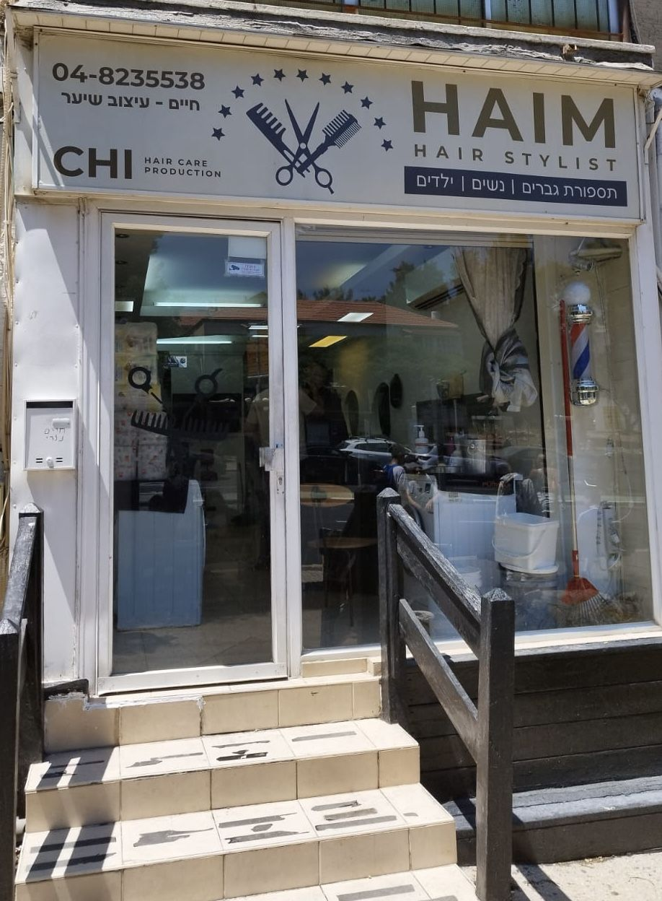
השלט מעל הדלת, דרך חנקין 2The sign above the door, 2 Derech Hankin
קונספט לדוגמה שנבנה עבור עיצוב שיער - חיים · זה אינו האתר הרשמי של העסקA sample concept built for Haim Hair Stylist · This is not the business’s official website
מספרה לגברים, לנשים ולילדים במרכז זיו, חיפה. ועל הקיר: אוסף של כלי ספרות מפעם.A salon for men, women and children at Merkaz Ziv, Haifa. And on the wall: a collection of old barber’s tools.
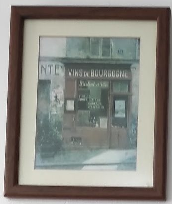
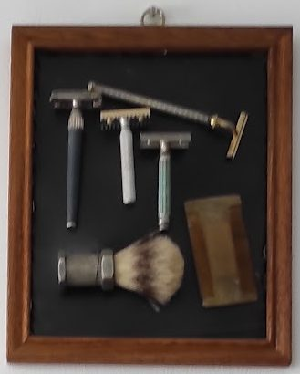
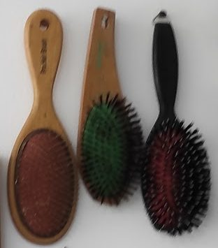
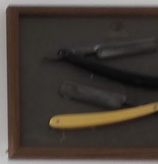
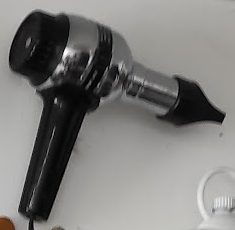
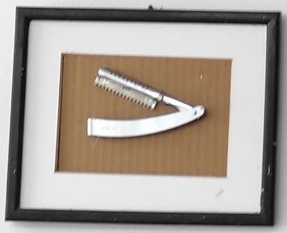
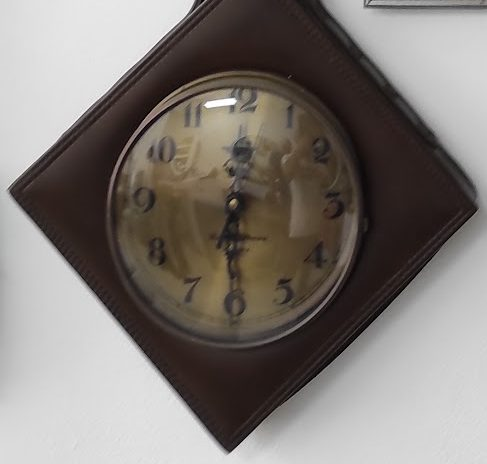
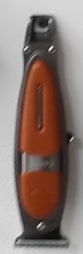
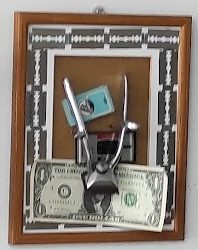
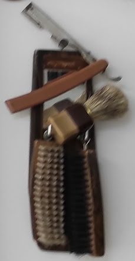
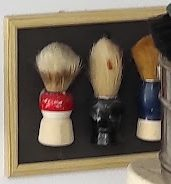
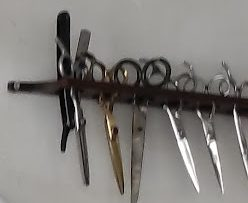
החפצים צולמו על הקיר של המספרהObjects photographed on the salon’s own wall
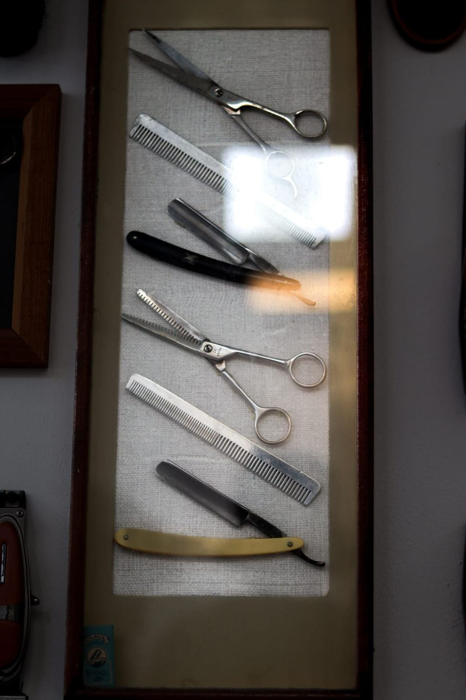
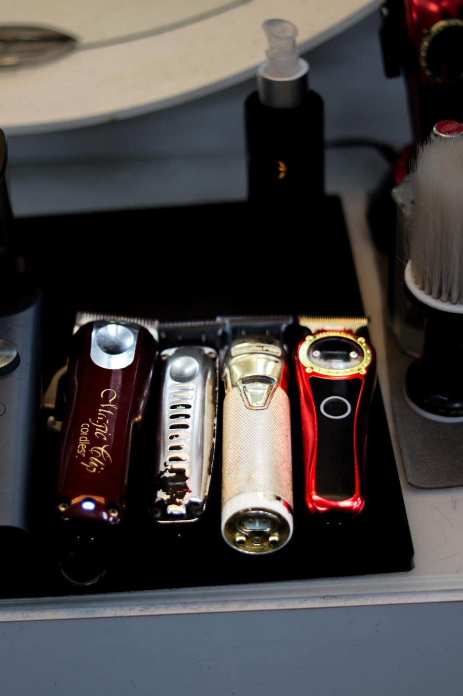
על הקיר
שמורים במסגרות עץ על הקיר.kept in wooden frames on the wall.
על השיש
מסודרים בשורה, מוכנים לעבודה.lined up, ready for work.
ככה כתוב על השלט מעל הדלת.That’s what the sign above the door says.

השלט מעל הדלת, דרך חנקין 2The sign above the door, 2 Derech Hankin
גבריםMen
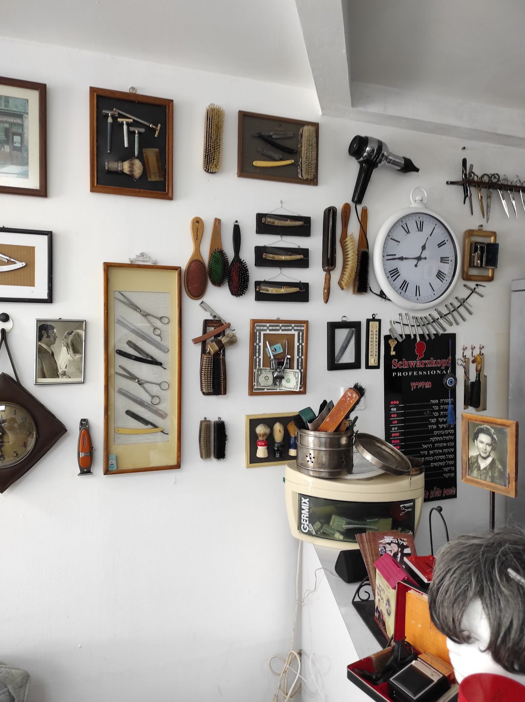
נשיםWomen
“…ועכשיו גם הדור הבא מסתפר אצלו!”
“…and now the next generation gets their hair cut with him too!”
ילדיםChildren
שאלתי חברים ‘אצל מי להסתפר?’ הרבה מאוד ענו ‘חיים’. בן אדם זהב עם יחס מקצועי, ספר טוב וגם כיף לדבר איתו. אחלה גבר
I asked friends ‘who should I get my hair cut with?’ Very many answered ‘Haim’. A golden person with a professional manner, a good barber and fun to talk to. A great guy.
ה-ספר בחיפה. מספר נהדר בקו שממש מחמיא לכל אחד ואחת, הגון, שירותי ונעים לבוא אליו בכל זמן. שמח שהכרנו דרך בן דוד שלי לפני הרבה שנים ועכשיו גם הדור הבא מסתפר אצלו!
THE barber in Haifa. A great cutter, with a line that really flatters everyone, honest, service-minded and pleasant to visit any time. Glad we met through my cousin many years ago, and now the next generation gets their hair cut with him too!
תודה לחיים. פעם ראשונה שהגעתי לחיים בעקבות המלצות מחברים. מקצוען עם יד מעולה. אחזור שוב. תודה
Thanks to Haim. The first time I came to Haim was on friends’ recommendations. A professional with an excellent hand. I’ll be back. Thanks.
חיים ספר בחסד עליון, אלוף! … ממליצה בחום!
Haim is a truly gifted barber, a champion! … Warmly recommended!
כמה מדרגות, והדלת.A few steps up, and the door.
לגברים, לנשים ולילדים, כמו שכתוב על השלט.Men, women and children, as the sign says.
בימי שני ובשבת. ביום שישי פותחים ב-7:30 וסוגרים ב-15:00.Mondays and Saturdays. On Fridays it opens at 7:30 and closes at 15:00.
דרך חנקין 2, במרכז זיו בחיפה. כמה מדרגות עם מעקה מובילות לדלת.2 Derech Hankin, Merkaz Ziv, Haifa. A few steps with a railing lead up to the door.